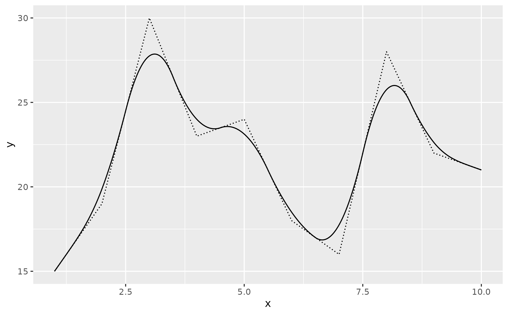
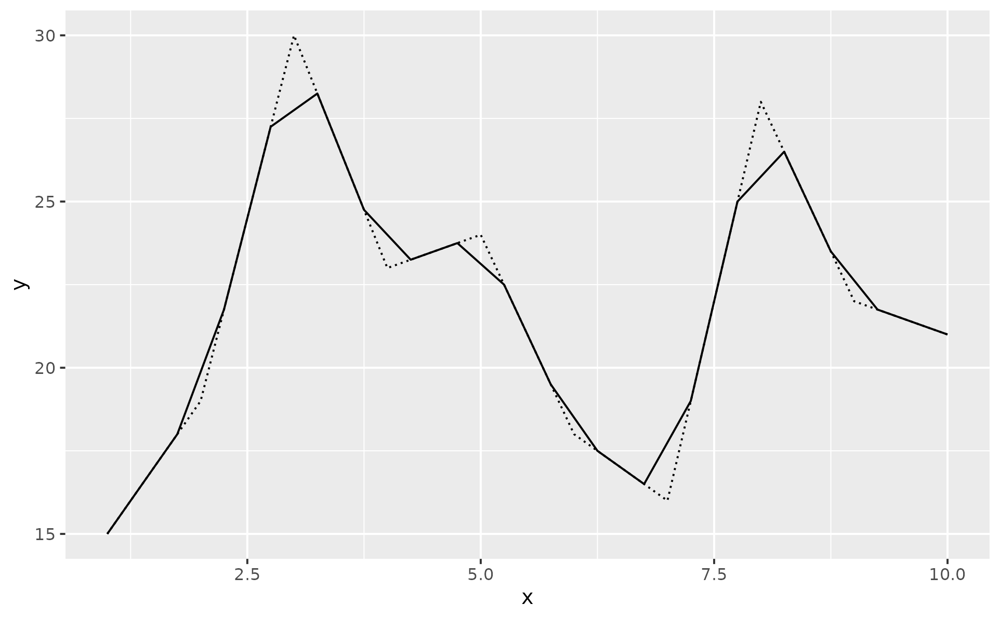
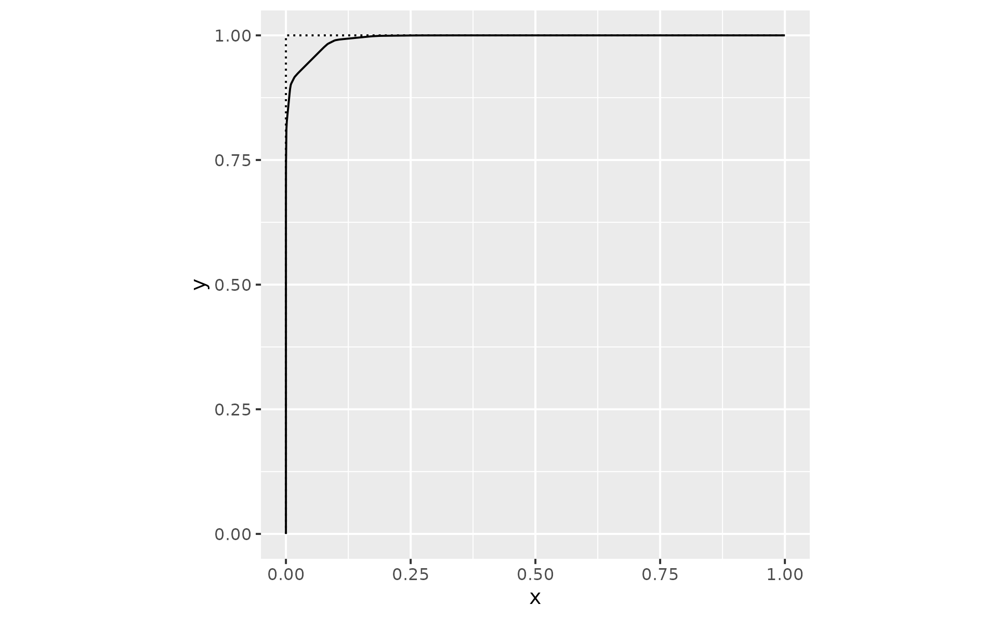
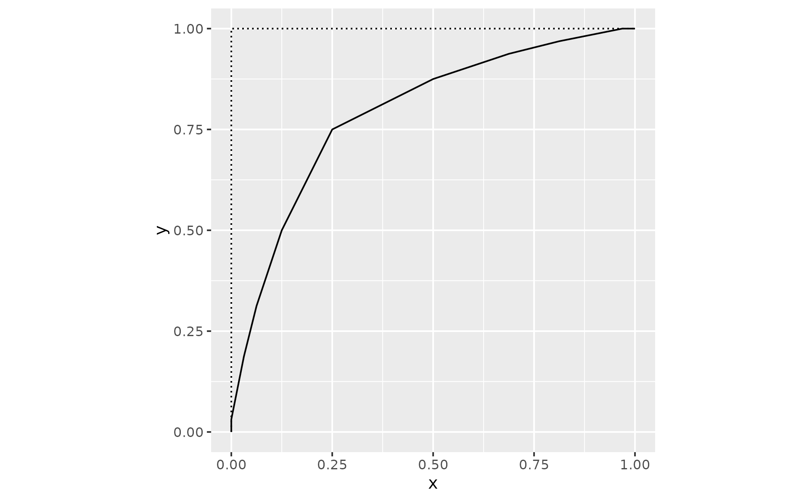
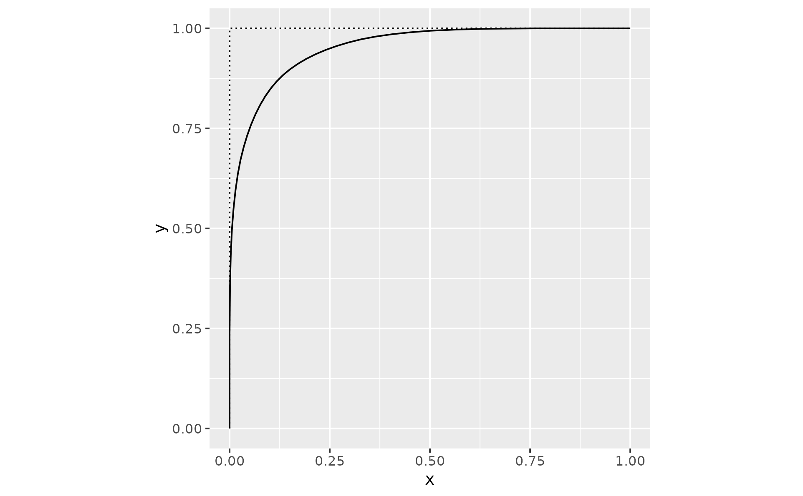
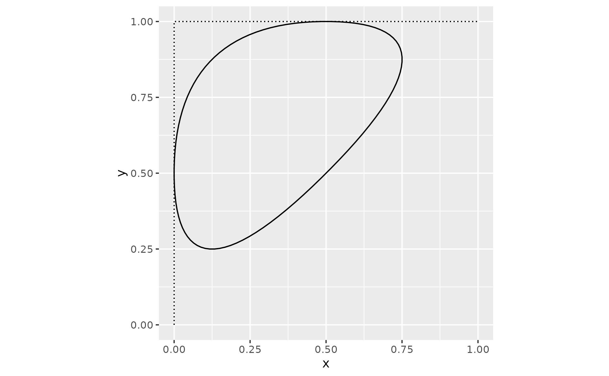

Apply Chaikin's corner cutting algorithm to smooth a path
Source:R/geom-chaikin.R, R/stat_chaikin.R
geom_chaikin.RdChaikin's corner-cutting algorithm can be used to smooth sharp corners of a path.
Usage
geom_chaikin(
mapping = NULL,
data = NULL,
stat = "chaikin",
position = "identity",
...,
iterations = 5,
ratio = 0.25,
closed = FALSE,
na.rm = FALSE,
show.legend = NA,
inherit.aes = TRUE
)
stat_chaikin(
mapping = NULL,
data = NULL,
geom = "path",
position = "identity",
...,
iterations = 5,
ratio = 0.25,
closed = FALSE,
na.rm = FALSE,
show.legend = NA,
inherit.aes = TRUE
)Arguments
- mapping
Set of aesthetic mappings created by
aes(). If specified andinherit.aes = TRUE(the default), it is combined with the default mapping at the top level of the plot. You must supplymappingif there is no plot mapping.- data
The data to be displayed in this layer. There are three options:
If
NULL, the default, the data is inherited from the plot data as specified in the call toggplot().A
data.frame, or other object, will override the plot data. All objects will be fortified to produce a data frame. Seefortify()for which variables will be created.A
functionwill be called with a single argument, the plot data. The return value must be adata.frame, and will be used as the layer data. Afunctioncan be created from aformula(e.g.~ head(.x, 10)).- position
Position adjustment, either as a string naming the adjustment (e.g.
"jitter"to useposition_jitter), or the result of a call to a position adjustment function. Use the latter if you need to change the settings of the adjustment.- ...
Other arguments passed on to
layer(). These are often aesthetics, used to set an aesthetic to a fixed value, likecolour = "red"orsize = 3. They may also be parameters to the paired geom/stat.- iterations
Integer. Number of iterations to apply. Must be between 0 and 10.
- ratio
Numeric. Cutting ratio must be between 0 and 1.
- closed
Logical. Specify if result is an open or closed shape.
- na.rm
If
FALSE, the default, missing values are removed with a warning. IfTRUE, missing values are silently removed.- show.legend
logical. Should this layer be included in the legends?
NA, the default, includes if any aesthetics are mapped.FALSEnever includes, andTRUEalways includes. It can also be a named logical vector to finely select the aesthetics to display.- inherit.aes
If
FALSE, overrides the default aesthetics, rather than combining with them. This is most useful for helper functions that define both data and aesthetics and shouldn't inherit behaviour from the default plot specification, e.g.borders().- geom, stat
Use to override the default connection between
geom_chaikinandstat_chaikin.
Details
Chaikin's corner cutting algorithm iteratively turns a jagged path into a smooth path.
The recursion formula starts from two vertices A and B, which represent a single corner of your path. From this, the algorithm derives two new points: one at the specified ratio when going from point A to point B, and one when going from B to A in the opposite direction. By default, a ratio of 0.25 results in two points: the first at 25% of point A and the other at 75% of point A (or 25% of point B). Those new points form a smoother path. Then the algorithm applies the same rule to each pair of new points. The rule is applied iterations times. The maximum number of iterations is 10, default is 5.
The ratio parameter must be a number between 0 and 1. If ratio > 0.5, then it will be flipped to 1 - ratio, and a message is shown.
Aesthetics
geom_chaikin() understands the following aesthetics (required
aesthetics are in bold):
x
y
alpha
color
group
linetype
linewidth
References
Chaikin, G. An algorithm for high speed curve generation. Computer Graphics and Image Processing 3 (1974), 346–349
Examples
set.seed(42)
dat <- data.frame(
x = seq.int(10),
y = sample(15:30, 10)
)
p1 <- ggplot(dat, aes(x, y)) +
geom_line(linetype = "12")
p1 +
geom_chaikin()

p1 +
geom_chaikin(iterations = 1)

triangle <- data.frame(x = c(0, 0, 1), y = c(0, 1, 1))
p2 <- ggplot(triangle, aes(x, y)) +
geom_path(linetype = "12") +
coord_equal()
# ratio let's you control
p2 + geom_chaikin(ratio = .1)

p2 + geom_chaikin(ratio = .5)

# closed parameter to generate a closed shape - or not
p2 + geom_chaikin(iterations = 5, ratio = 0.25, closed = FALSE) # default

p2 + geom_chaikin(closed = TRUE)
